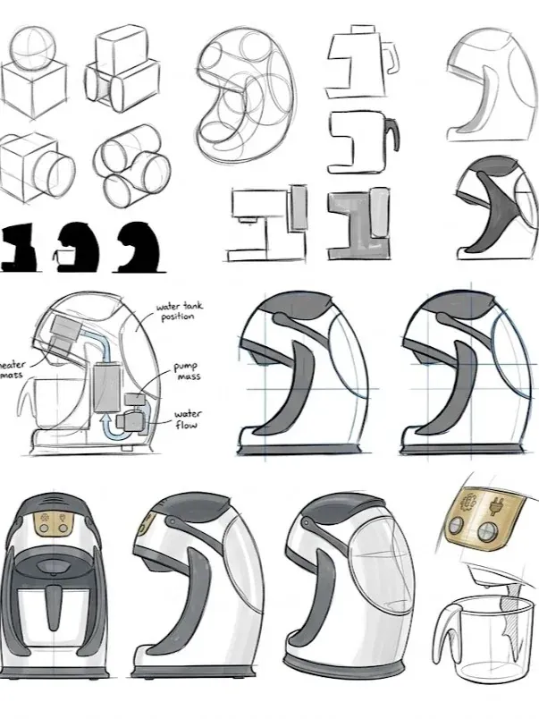
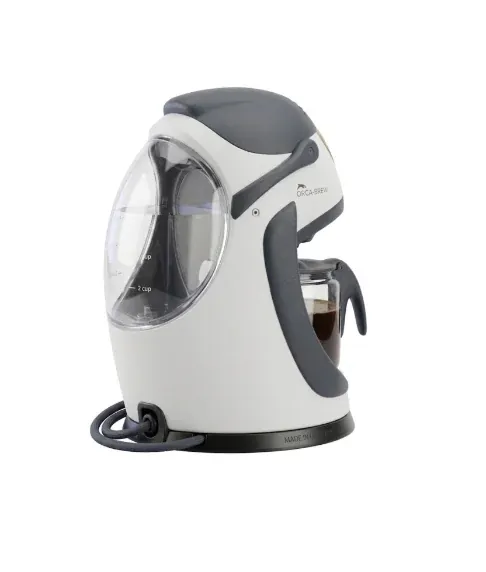
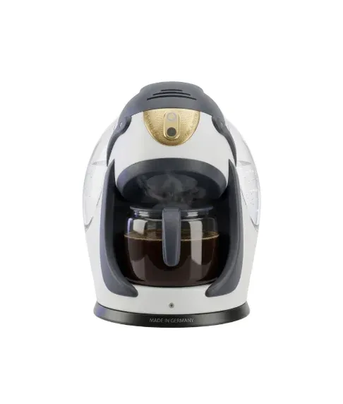
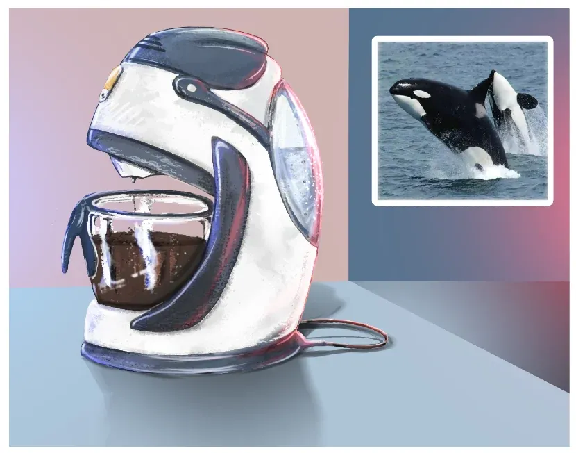

02 · Industrial design · Orcaتصميم صناعي · أوركا
Orca: a coffee machine from first sketch to final renderأوركا: ماكينة قهوة من أول سكتش إلى الرندر النهائي
A drip coffee machine designed from zero — from the first sketches through form and proportion studies to modelling and final rendering.ماكينة قهوة بالتنقيط مصمّمة من الصفر — من السكتشات الأولى ودراسات الشكل والتناسب إلى النمذجة ومرحلة الرندرة النهائية.

The processخطوات العمل
-
01
Sketches, form and layoutسكتشات، شكل، وتوزيع داخلي
The form starts from simple volumes and the orca’s silhouette. The same sheet places the water tank, heater, pump and water flow, so the shell is drawn around the parts it has to hold.يبدأ الشكل من كتل بسيطة ومن هيئة حوت الأوركا. وفي الورقة نفسها يتحدد مكان خزان الماء والسخان والمضخة ومسار الماء، حتى يُرسم الغلاف الخارجي حول القطع التي يجب أن يتسع لها.

-
02
Modelled and rendered in the studioالنمذجة والرندر في الاستوديو
The 3D model is rendered on white: a clear water tank with cup markings, a black-and-white body taken from the orca, and a gold control panel.النموذج ثلاثي الأبعاد مُرندر على خلفية بيضاء: خزان ماء شفاف بعلامات الأكواب، وجسم بالأبيض والأسود مأخوذ من الأوركا، ولوحة تحكم ذهبية.


-
03
As an illustrationكرسمة توضيحية
The final view, redrawn as a hand-rendered illustration.اللقطة النهائية نفسها، معاد رسمها كرسم توضيحي يدوي.

Let's build the shot.لنصنع المشهد.
Have a project in mind? Send the details by email or WhatsApp.لديك مشروع؟ أرسل التفاصيل عبر البريد أو واتساب.